China Employee Termination: Pulse Operator Radio Brief for Foreign Employers (Hourly Testing Run)
- China termination control works best when teams operate like a coordinated radio network: one legal baseline, one shared signal language, and one owner per unresolved risk.
- For foreign employers, the highest-cost errors still come from handoff misalignment (legal ↔ HR ↔ manager ↔ payroll), not from one isolated technical mistake.
- A radio-brief format improves decision speed by translating legal context into short, repeatable “call signs” and immediate actions.
- Mutual termination can reduce friction, but only if settlement text, payout mapping, and communication records remain synchronized through closure.
- City-level practice variance remains real; national legal anchors should be paired with local validation before final release.
Channel check: legal context in plain English
China is not an at-will termination market. Employer-initiated termination should correspond to a lawful route under the Labor Contract Law framework, then be executed with coherent evidence and procedural consistency. For non-local leadership, the practical sequence is:
- Confirm lawful route on current facts.
- Test evidence integrity for that route.
- Align communication and settlement outputs with the same route logic.
The State Council implementation regulations and SPC labor-dispute interpretation are operationally relevant because they shape how disputes evaluate consistency between rationale, records, and behavior. In practical terms: route validity opens the path, but execution coherence determines whether the path remains stable.
Why this run uses a radio-brief format
Global teams often receive long updates but still miss the exact moment when case quality degrades. A radio-brief model solves this by compressing information into high-signal messages. Instead of “long memo first,” teams share a structured sequence: current state, risk call sign, owner, and next action timestamp.
This improves Pulse-style readability for foreign clients and helps leaders intervene quickly without sacrificing legal rigor.
Pulse radio board: 9 call signs foreign employers should monitor
Call Sign R1 — Route clarity weak
Route language remains broad or inconsistent across legal, HR, and manager artifacts.
Impact: downstream documentation may harden around an unstable legal rationale.
Immediate action: publish one canonical route note with owner, version, and review timestamp.
Call Sign E2 — Evidence chain fractured
Chronology gaps, owner ambiguity, or version conflicts appear in supporting records.
Impact: defensibility declines even when document count is high.
Immediate action: run chronology reconciliation before any employee-facing communication.
Call Sign C3 — Communication drift detected
Approved script diverges in verbal or written manager/HR delivery.
Impact: narrative inconsistency risk rises and trust drops.
Immediate action: freeze script version; route deviations into exception queue.
Call Sign S4 — Settlement wording mismatch
Settlement components are described differently across legal text, payroll sheet, and communication notes.
Impact: post-signature disputes and correction cycles become more likely.
Immediate action: enforce one settlement source sheet linked to all channels.
Call Sign P5 — Payroll lock pressure with open assumptions
Termination-month treatment questions remain unresolved as payroll lock approaches.
Impact: unresolved logic can become irreversible entries.
Immediate action: apply legal-payroll stop/go gate before lock cutoff.
Call Sign L6 — Local validation pending
National framework is clear, but local implementation caveats remain open.
Impact: route confidence may be overstated in city execution.
Immediate action: assign local validation owner and mandatory sign-off.
Call Sign G7 — Governance report too generic
Leadership update uses broad labels (“on track,” “delayed”) without risk specifics.
Impact: intervention arrives late and with lower precision.
Immediate action: shift to call-sign reporting with owner and remediation ETA.
Call Sign X8 — Exception backlog growing
Multiple unresolved exceptions remain open beyond SLA window.
Impact: cumulative instability increases release error probability.
Immediate action: trigger escalation protocol and reduce open exception count before release.
Call Sign Q9 — Closure quality incomplete
Case marked “closed” without full payment proof or archive integrity check.
Impact: weak dispute readiness and post-event governance risk.
Immediate action: enforce closure gate requiring evidence-complete archive pack.
Practical implications for foreign employers
For cross-border operators, this model helps convert legal structure into operational behavior. Legal teams still anchor route decisions, but operational teams gain a shared language for escalation and release control. The result is better decision cadence, reduced rework, and improved reporting quality for HQ.
This also improves budget discipline. When teams catch R1/E2/C3/S4 signals early, they reduce last-minute reversals that typically inflate legal, payroll, and management coordination costs. In other words, radio discipline is not just compliance discipline; it is cost and predictability discipline.
20-minute daily radio drill
Minute 0-4: Route + evidence check
- Confirm route note status by case.
- Review E2 flags and unresolved chronology gaps.
- Hold progression for unresolved R1/E2 cases.
Minute 4-8: Communication integrity check
- Verify approved script version and last approver.
- Review C3 deviations.
- Assign correction owner and deadline.
Minute 8-12: Settlement and payroll sync
- Validate settlement source sheet consistency.
- Check S4/P5 status and lock-window timing.
- Run stop/go decision pre-lock.
Minute 12-16: Local + exception review
- Confirm L6 status per city.
- Review X8 backlog against SLA.
- Trigger escalations as needed.
Minute 16-20: Leadership broadcast
- Publish concise board: call sign, owner, ETA, next review.
- Highlight only non-green cases and blockers.
SOP by role (radio discipline)
HR (Channel coordinator)
- Maintain case board with call-sign status.
- Block communication for unresolved R1/E2/C3 cases.
- Log communication events and employee responses.
- Coordinate archive completion at closure.
Legal (Route authority)
- Approve route rationale and legal wording.
- Flag unresolved legal assumptions explicitly.
- Validate settlement text coherence.
- Co-sign stop/go for high-risk cases.
Manager (Field operator)
- Submit date-stamped factual updates.
- Use approved communication script only.
- Escalate material new facts immediately.
- Avoid ad-hoc commitments beyond approved terms.
Payroll/Finance (Settlement control)
- Map settlement components with treatment assumptions.
- Validate S4/P5 alignment before lock.
- Produce payment proof and reconciliation logs.
- Deliver closure artifacts to archive owner.
Compliance/Ops (Signal assurance)
- Audit call-sign transitions and reason codes.
- Track repeat failures by city/team.
- Verify closure gate integrity.
- Issue weekly trend and remediation report.
Required document checklist
- Canonical route note (owner/version/time)
- Evidence chronology log (event-date-owner)
- Approved communication script (version-controlled)
- Settlement source sheet (single-source)
- Payroll treatment mapping (pre-lock validated)
- Local validation memo (city-specific)
- Payment proof and closure archive checklist
Suggested SLA targets:
- route note final within 1 business day,
- chronology pass within 2 business days,
- settlement/payroll sync before lock,
- closure archive within 2 business days after payment.
Exception handling playbook
Case 1: route confidence drops after new facts
- Trigger R1 hold.
- Re-test route viability with updated record set.
- Reissue route note before communication resumes.
Case 2: evidence conflict appears pre-meeting
- Trigger E2 hold.
- Resolve chronology ownership conflict.
- Resume only after evidence pass status.
Case 3: payout challenge raised during communication
- Trigger S4 review.
- Move to documented clarification flow.
- Reconfirm legal text + payroll mapping before response finalization.
Case 4: local caveat appears late in cycle
- Trigger L6 hold.
- Seek local validation and update decision basis.
- Reroute case if required by local implementation context.
Case 5: payroll coding mismatch near lock
- Trigger P5 stop/go gate.
- Correct mapping and revalidate.
- Update employee explanation language before release.
System implementation notes (minimum controls)
Required fields:
- case_id
- city
- call_sign_status (R1/E2/C3/S4/P5/L6/G7/X8/Q9)
- route_status
- evidence_status
- script_status
- settlement_status
- payroll_status
- local_validation_status
- release_status
- unresolved_count
- final_closure_status
Control rules:
- immutable status log (who/when/why),
- mandatory reason codes for non-green states,
- auto-alert when unresolved_count > 1,
- release lock if R1/E2/S4/P5 unresolved,
- closure lock if payment proof/archive incomplete.
Common mistakes and prevention
Mistake: legal and operational channels run separately
Prevention: one shared board and call-sign language across all roles.
Mistake: “final” files exist in multiple locations
Prevention: single-source policy for route, script, settlement artifacts.
Mistake: escalation triggered only at crisis stage
Prevention: escalate at first persistent amber signal.
Mistake: leadership report hides root risk
Prevention: replace status words with call-sign + owner + ETA format.
Mistake: closure marked on signature alone
Prevention: require Q9 checklist pass before closure state changes.
What to do now (10-step quick start)
- Add call-sign fields to active case tracker.
- Classify open cases by current call sign.
- Publish canonical route note for each active case.
- Run chronology pass on all non-green evidence cases.
- Lock communication script version controls.
- Standardize settlement source sheet and payroll mapping.
- Activate pre-lock legal-payroll stop/go gate.
- Add local validation owner field per city.
- Shift leadership updates to call-sign broadcast format.
- Review repeat call-sign failures weekly and tune controls.
What to watch next
- Continued dispute emphasis on evidence and process consistency.
- Concentrated risk around settlement/payroll alignment near lock windows.
- City-level implementation variance and local confirmation needs.
- Internal deadline pressure that can trigger shortcut behavior.
FAQ
1) Is this legal advice?
No. This is an operational decision-support brief; legal advice requires fact-specific counsel.
2) Can foreign employers still use unilateral routes?
Potentially yes, if legal and factual conditions support them; these routes are often evidence-intensive.
3) Why is payroll involved before legal closure?
Because settlement design and treatment mapping can materially affect risk and employee trust outcomes.
4) Is negotiated termination automatically safer?
Often lower-friction, but not low-risk unless documentation and execution stay coherent.
5) What KPI should we start with?
Track green-call-sign rate at release gates: percent of cases with no unresolved R1/E2/C3/S4/P5/L6 at communication and payroll lock points.
6) How frequently should the radio drill run?
Daily for active cases; increase cadence during payroll lock periods or restructuring windows.
Legal appendix (secondary depth)
This run is anchored in three core legal layers: the Labor Contract Law, State Council implementation regulations, and SPC labor-dispute interpretation. Together, they frame lawful route logic and dispute-facing standards for evidence and procedure. Practitioner and market/business sources are applied as translation layers for foreign employers, especially where settlement and payroll handling influence risk outcomes.
Disclaimer
This content is informational only and does not constitute legal, tax, or employment advice. Employers should seek qualified local legal and tax advice for specific scenarios.
Sources
- National People’s Congress — Labor Contract Law of the PRC (English): http://www.npc.gov.cn/zgrdw/englishnpc/Law/2007-12/13/content_1384064.htm (accessed 2026-03-03).
- State Council — Implementation Regulations of the Labor Contract Law (Decree No. 535): https://www.gov.cn/gongbao/content/2008/content_1124615.htm (accessed 2026-03-03).
- Supreme People’s Court — Interpretation on Application of Law in Labor Dispute Cases (Fa Shi [2020] No. 26): https://www.court.gov.cn/fabu/xiangqing/243981.html (accessed 2026-03-03).
- China Briefing / Dezan Shira — Employee Termination in China (updated 2025-10-17): https://www.china-briefing.com/news/employee-termination-in-china/ (accessed 2026-03-03).
- Littler — Key Recent Developments in China’s Employment Law: https://www.littler.com/news-analysis/asap/key-recent-developments-chinas-employment-law-china-us-comparative-perspective (accessed 2026-03-03).
- PwC Worldwide Tax Summaries — PRC Individual: Taxes on Personal Income: https://taxsummaries.pwc.com/peoples-republic-of-china/individual/taxes-on-personal-income (accessed 2026-03-03).
China-Payroll.com supports foreign employers with compliance-first EOR and payroll operations for China hiring and termination workflows.
Need local employment support in China?
If you need a compliance-first partner for hiring, payroll, and risk controls in China, China-Payroll.com can help evaluate the right setup.
Image Prompt Pack
Create a 16:9 hero image for article title: 'China Employee Termination: Pulse Operator Radio Brief for Foreign Employers (Hourly Testing Run)'. Scene: global operations team evaluating workforce model options for China market entry. Include motifs: decision m…